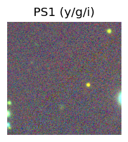
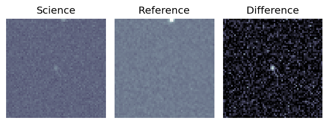
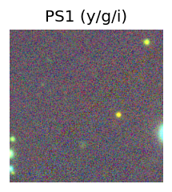
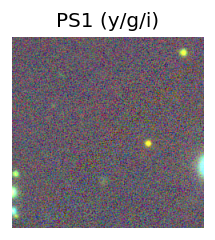

Candidate List 20250902 Previous Day Next Day Section 1: New Sources (age<1d) Cosmological Afterglow
Section 2: Old (1-5d) sources observed last night placeholder
Section 1: New Afterglow/FBOT Cands Last Night (0)
Section 2: Older Sources Observed Last Night (14)
0. ZTF25ablzevb (Afterglow?) [Back to Top] [Share] [Trigger Swift] [Fritz ] [Lasair ]RA, Dec: 323.38646, 37.06716 21h33m32.75s, 37d 4m1.79sGalactic (l, b): 84.80898, -10.75523 ext(g-r) = 0.237PS1: 1 source in 3 arcsec Closest: d = 4.15 arcsec photoz=0.57+/-0.06 peak abs mag = -26.55
1. ZTF25ablzgzu (Afterglow?) [Back to Top] [Share] [Trigger Swift] [Fritz ] [Lasair ]RA, Dec: 330.97465, 36.74658 22h 3m53.92s, 36d44m47.70sGalactic (l, b): 89.3084, -14.95845 ext(g-r) = 0.16PS1: 1 source in 3 arcsec Closest: d = 0.41 arcsec photoz=0.04+/-0.00 peak abs mag = -17.63
2. ZTF25abmniua (Afterglow?) [Back to Top] [Share] [Trigger Swift] [Fritz ] [Lasair ]RA, Dec: 34.87195, 78.78076 2h19m29.27s, 78d46m50.73sGalactic (l, b): 127.29753, 16.66249 ext(g-r) = 0.391
3. ZTF25abmraup (Afterglow?) [Back to Top] [Share] [Trigger Swift] [Fritz ] [Lasair ]RA, Dec: 297.33666, 14.43777 19h49m20.80s, 14d26m15.98sGalactic (l, b): 52.44532, -5.84144 ext(g-r) = 0.265
4. ZTF25abmrxev (Afterglow?) [Back to Top] [Share] [Trigger Swift] [Fritz ] [Lasair ]RA, Dec: 308.15158, 20.59315 20h32m36.38s, 20d35m35.35sGalactic (l, b): 63.27334, -11.27704 ext(g-r) = 0.122PS1: 1 source in 3 arcsec Closest: d = 6.63 arcsec photoz=1.22+/-0.10 peak abs mag = -27.65 Consistent with synchrotron, g-r>0!
5. ZTF25abmtiec (Afterglow?) [Back to Top] [Share] [Trigger Swift] [Fritz ] [Lasair ]RA, Dec: 350.01943, 16.28415 23h20m4.66s, 16d17m2.96sGalactic (l, b): 93.22098, -41.25742 ext(g-r) = 0.042LegacySurvey: 1 sources in 3 arcsec Closest: d = 2.24 arcsec, 352.6 deg (east of north) photoz=0.85 (68% bounds 0.35, 1.22), type=REX peak abs mag = -25.38 (68% bounds -23.06, -26.35) Consistent with synchrotron, g-r>0!
6. ZTF25abmurpc (FBOT?) [Back to Top] [Share] [Trigger Swift] [Fritz ] [Lasair ]RA, Dec: 333.62982, 40.81049 22h14m31.16s, 40d48m37.78sGalactic (l, b): 93.51732, -12.931 ext(g-r) = 0.158peak abs mag = -20.41 PS1: 1 source in 3 arcsec Closest: d = 0.15 arcsec photoz=0.09+/-0.16 peak abs mag = -18.74
7. ZTF25abmwpui (FBOT?) [Back to Top] [Share] [Trigger Swift] [Fritz ] [Lasair ]RA, Dec: 5.85705, -1.86118 0h23m25.69s, -1d-51m-40.26sGalactic (l, b): 106.87843, -63.85647 WARNING: -4.04 deg from ecliptic plane ext(g-r) = 0.047peak abs mag = -20.09 LegacySurvey: 1 sources in 3 arcsec Closest: d = 0.34 arcsec, 155.9 deg (east of north) photoz=0.09 (68% bounds 0.06, 0.13), type=SER peak abs mag = -18.68 (68% bounds -17.95, -19.52)
8. ZTF25abnebvm (FBOT?) [Back to Top] [Share] [Trigger Swift] [Fritz ] [Lasair ]RA, Dec: 351.18306, 8.55055 23h24m43.93s, 8d33m2.00sGalactic (l, b): 89.40841, -48.59584 ext(g-r) = 0.074LegacySurvey: 1 sources in 3 arcsec Closest: d = 1.62 arcsec, 155.3 deg (east of north) photoz=0.24 (68% bounds 0.18, 0.36), type=EXP peak abs mag = -20.72 (68% bounds -19.97, -21.68) Consistent with synchrotron, g-r>0!
9. ZTF25abnmwof (FBOT?) [Back to Top] [Share] [Trigger Swift] [Fritz ] [Lasair ]RA, Dec: 291.35354, 37.54439 19h25m24.85s, 37d32m39.82sGalactic (l, b): 70.15561, 9.99926 ext(g-r) = 0.225peak abs mag = -21.56 PS1: 1 source in 3 arcsec Closest: d = 0.89 arcsec photoz=0.28+/-0.21 peak abs mag = -21.90
10. ZTF25abnngdd (FBOT?) [Back to Top] [Share] [Trigger Swift] [Fritz ] [Lasair ]RA, Dec: 310.83824, 8.2747 20h43m21.18s, 8d16m28.91sGalactic (l, b): 54.17791, -20.33822 ext(g-r) = 0.076peak abs mag = -23.84 LegacySurvey: 1 sources in 3 arcsec Closest: d = 0.14 arcsec, 100.6 deg (east of north) photoz=0.21 (68% bounds 0.1, 0.41), type=DEV peak abs mag = -20.12 (68% bounds -18.36, -21.77)
11. ZTF25abnpczz (FBOT?) [Back to Top] [Share] [Trigger Swift] [Fritz ] [Lasair ]RA, Dec: 347.24887, -18.57942 23h 8m59.73s, -18d-34m-45.92sGalactic (l, b): 47.46151, -64.95933 ext(g-r) = 0.036peak abs mag = -18.53 PS1: 1 source in 3 arcsec Closest: d = 0.87 arcsec photoz=0.16+/-0.06 peak abs mag = -19.87 Consistent with synchrotron, g-r>0!
12. ZTF25abodbpj (FBOT?) [Back to Top] [Share] [Trigger Swift] [Fritz ] [Lasair ]RA, Dec: 339.34535, -11.19268 22h37m22.88s, -11d-11m-33.66sGalactic (l, b): 53.21625, -54.72845 WARNING: -2.32 deg from ecliptic plane ext(g-r) = 0.076LegacySurvey: 1 sources in 3 arcsec Closest: d = 0.61 arcsec, 203.0 deg (east of north) photoz=0.85 (68% bounds 0.55, 1.23), type=PSF peak abs mag = -23.4 (68% bounds -22.26, -24.39) Consistent with synchrotron, g-r>0!
13. ZTF25abodfew (FBOT?) [Back to Top] [Share] [Trigger Swift] [Fritz ] [Lasair ]RA, Dec: 326.91404, -27.90601 21h47m39.37s, -27d-54m-21.65sGalactic (l, b): 20.8161, -49.49031 ext(g-r) = 0.034PS1: 1 source in 3 arcsec Closest: d = 0.32 arcsec photoz=0.22+/-0.06 peak abs mag = -20.79 Consistent with synchrotron, g-r>0! 


 
